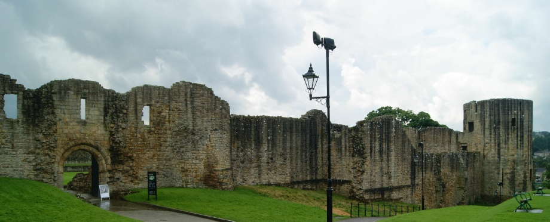
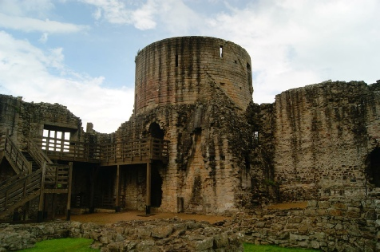

BARNARD CASTLE, DL12 8PR
GETTING THERE
Postcode: DL12 8PR
Lat/Long: 54.5434N 1.9265W
Notes: Castle is situated in the town of the same name. Ample parking in the town (pay and display) with just a short walk to the castle.
WHAT IS THERE TO SEE?
Extensive, albeit ruinous, remains of a a medieval castle. The Outer Ward is in private ownership under St Margret's chapel and Castle Farm. The Inner, Middle and Town Wards are all assessable.
Castle is owned and managed by English Heritage .
ADDITIONAL NOTES
1. Barnard Castle came into the ownership of Richard, Duke of Gloucester, (later Richard III) in 1471. Completely disregarding the rights of the real heir, Anne de Beauchamp, Richard took the castle on the grounds of being her son-in-law.
On land hotly contested between Church and Crown, Barnard's Castle successfully withstood several sieges from regional rebels. It was also home to John Baliol, one time king of Scotland and the man whose rebellion against Edward I commenced the Wars of Independence with England.
HISTORY OF BARNARD CASTLE
The land on which Barnard Castle now stands was a political flashpoint in early medieval England. The land had been granted to the church in the ninth century but, following the Norman conquest, had been annexed by the Earls of Northumberland. Following a rebellion the land was confiscated by the Crown and then handed onto the Baliol family; it was from one member of this family, Bernard de Baliol, that the castle and associated town acquired their name.
In 1216, during the troubled reign of King John, the castle played an important part in the civil war with the barons. The then owner, Hugh de Baliol, was an ally of King John and held it against the Northumbrian barons. The castle was besieged but was not taken. It remained with the family and in 1278 John de Baliol inherited the property. John was chosen by Edward I to succeed to the Scottish throne but his rejection of his oath of loyalty to the English King led to the Wars of Scottish Independence. By 1296 he was a prisoner in the Tower of London and the church took the opportunity to re-take Barnard's Castle citing their ninth century claim. By 1306 though the castle was back in the hands of the Crown.
In December 1569 the castle was besieged by rebels partaking in the 'Rising of the North'; a rebellion centred around the Earls of Northumberland and Westmorland planning to restore the Catholic faith and overthrow Elizabeth I in favour of Mary, Queen of Scots. Barnard's Castle was stormed forcing the defenders into the inner ward which, although secure, lacked a reliable water source forcing the surrender. The victory was short lived though; having had time to muster troops, the Earl of Sussex arrived with an army and ended the rebellion.
Recovered original photographs

